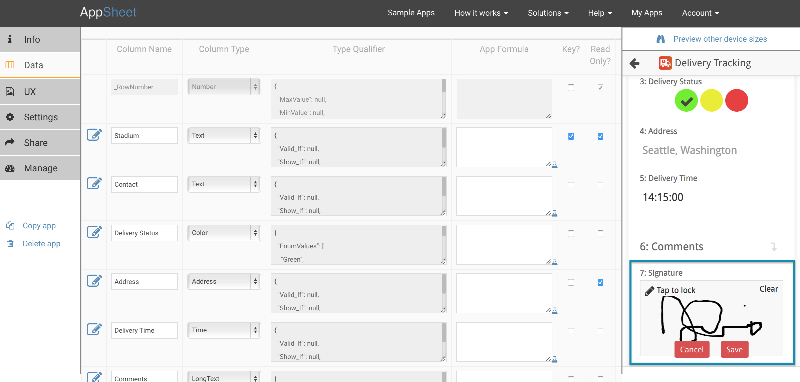

Capturing signatures is easy with AppSheet. Simply insert a column in your spreadsheet with the word "Signature" as the column header where you would like the signature pad to appear in the form. AppSheet will automatically detect this new column as a Signature Type after you regenerate column structure.
Alternatively, you can name the column anything you like and change the Column Type to Signature manually in the Advanced Editor>Data>Column Structure tab.
The Drawing type is similar to Signature, but provides a larger canvas and colored pens in order to capture free-form sketches within the app.
